UDN
Search public documentation:
PhATUserGuide
日本語訳
中国翻译
한국어
Interested in the Unreal Engine?
Visit the Unreal Technology site.
Looking for jobs and company info?
Check out the Epic games site.
Questions about support via UDN?
Contact the UDN Staff
中国翻译
한국어
Interested in the Unreal Engine?
Visit the Unreal Technology site.
Looking for jobs and company info?
Check out the Epic games site.
Questions about support via UDN?
Contact the UDN Staff
UE3 Home > Unreal Editor and Tools > Physics Asset Tool User Guide
UE3 Home > Physics > Physics Asset Tool User Guide
UE3 Home > Physics > Physics Asset Tool User Guide
Physics Asset Tool User Guide
Overview
Opening PhAT
PhAT Interface
Menu Bar
Edit
- Undo - Undo last completed action.
- Redo - Redo last undone action.
- Change Default Skeletal Mesh - Sets the currently selected skeletal mesh asset in the Content Browser as the default skeletal mesh for the physics asset.
Tools
- Reset Entire Asset - Opens initial body creation dialog and replaces entire physics asset using the new settings.
- Reset Selected Bone Collision - Clears any collision modifications made to the selected bodies. of the skeletal mesh.
- Apply Selected Physical Material to All Bodies - Assigns the currently selected Physical Material in the Content Browser to all of the bodies in the physics asset. Disabled if no Physical Material is selected.
- Copy Joint Settings to All Joints - Copies the properties of the currently selected constraint to all of the constraints in the physics asset. Has no effect if no constraint is selected.
Window
- Properties - Toggles display of the Properties Pane.
- Tree - Toggles display of the Tree Pane.
Tool Bar
What follows is a description of each of the toolbar buttons, from left to right as they appear on the toolbar.| Icon | Description |
|---|---|
 | Toggles between editing physical bodies or constraints. |
| Toggles between working in World space and Local space coordinates for transform tools. | |
| 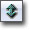 | Sets the translation widget active. |
| Sets the rotation widget active. | |
| Sets the scale widget active. | |
| Toggles snapping for transform tools. Translation moves in 0.25 increments without snapping; 2.0 increments with snapping. Rotation rotates in 1.0 increments without snapping; 15.0 increments with snapping. | |
| Copies properties of currently selected body/constraint to the next selected body/constraint. | |
| Toggles between displaying body properties or instance properties in the Properties Pane when in Body editing mode. | |
 | Toggles preview of the physics simulation for the physics asset in the Preview Pane. |
| Cycles the mesh rendering mode between lit rendered mesh, wireframe, and hidden. | |
| Cycles the collision rendering mode between geometry, wireframe, and hidden. | |
| 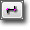 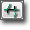 | Cycles the constraint rendering mode between position, limits, and hidden. |
| Toggles display of fixed bodies in red. | |
| Toggles display of the floor grid mesh in the Preview Pane. | |
| Toggles display of the default skeletal mesh's skeleton and bone names in the Preview Pane. | |
| 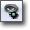 | Toggles display of the vertices weighted to the currently selected bone/body in the Tree Pane |
| Toggles display of mass properties for the bodies of the physics asset when the simulation preview is enabled. | |
| 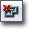 | Disables collision between the currently selected body in the Tree Pane and the next selected body. |
| 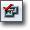 | Enables collision between the currently selected body in the Tree Pane and the next selected body. |
| Welds the currently selected body in the Tree Pane to the next selected body. | |
| 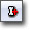 | Adds a new body to the next selected bone on the Tree Pane. Requires double-click. Creates a box by default. |
| Adds a new sphere body to the currently selected bone in the Tree Pane. | |
| 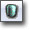 | Adds a new sphyl body to the currently selected bone in the Tree Pane. |
| 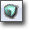 | Adds a new box body to the currently selected bone in the Tree Pane. |
| 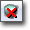 | Delets the currently selected body in the Tree Pane. |
| 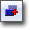 | Creates a duplicate of the currently selected body in the Tree Pane. |
| 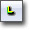 | |
| 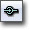 | Converts the currently selected constraint in the Tree Pane to a ball and socket joint. |
| 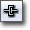 | Converts the currently selected constraint in the Tree Pane to a hinge joint. |
| 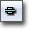 | Converts the currently selected constraint in the Tree Pane to a prismatic joint. |
| 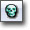 | Converts the currently selected constraint in the Tree Pane to a skeletal joint. |
| 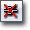 | Deletes the currently selected constraint in the Tree Pane. |
| Allows you to select and play an animation from the Preview Anim Set on the skeletal mesh when the simulation preview is enabled. | |
| Toggles display of the skeletal mesh's skeleton as driven by the preview animation when the simulation preview is enabled |
Preview Pane
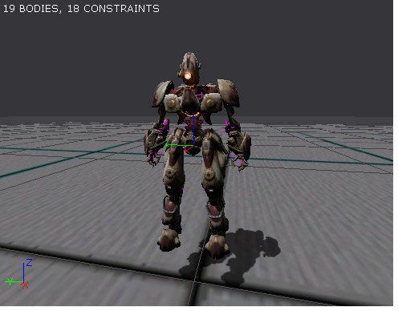 The Preview Pane shows a rendered view of the default skeletal mesh asset associated with the physics asset. It also shows any physical bodies associated with the ones in the skeleton of the default mesh, any constraints between those bodies, visual tools to manipulate those bodies and constraints, and information about those bodies and constraints. The rendering mode for the mesh, the bodies, and the constraints can all be adjusted individually to get just the right preview for the task at hand. Perhaps most importantly, the physics simulation of the bodies and constraints can be previewed directly in the viewport and the mesh can be manipulated (nudging it or grabbing amd moving it) to see how they react to particular actions.Properties Pane
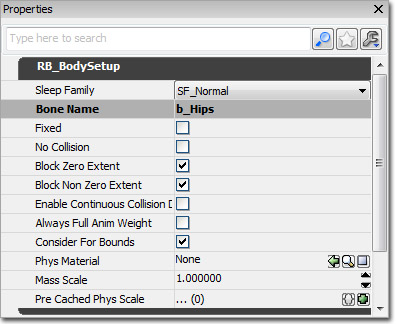 The Properties pane is a standard Unreal properties window which shows either a set of basic editor properties if nothing is selected or the properties of the body or constraint currently selected in the Tree Pane, depending on what mode the editor is in. When in Body editing mode, the Properties Pane can be toggled between displaying the body's properties and the instance properties. When in Constraint editing mode, the Properties Pane can be toggled between showing the constraint's properties and the instance properties.Editor Properties
Anim- Preview Anim Set - Sets the AnimSet used for previewing animations in the Preview Pane during simulation preview.
- Physics Blend - Sets the blending between physics driving the skeleton and the preview animation dirving the skeleton.
- Blend On Poke - If true, the preview mesh will be driven by the preview animation until poked (Ctrl + LMB) in the Preview Pane. It then snaps to the physics simulation, pauses for Poke Pause Time, and blends back to the animation over Poke Blend Time.
- Poke Pause Time - Sets the amount of time to show the physics simulation when Blend On Poke is true.
- Poke Blend Time - Sets the amount of time it takes to blend back to the animation when Blend On Poke is true.
- Angular Spring Scale - Sets an overall spring scale multiplier applied to all motors.
- Angular Damping Scale - Sets an overall damping scale multiplier applied to all motors.
- Draw Contacts -
- Sim Speed - Sets the playback speed of the preview (physics simulation or preview animation).
- Floor Gap - Sets the distance above the floor the skeletal mesh is position when at rest.
- Grav Scale - Sets a multiplier for the gravity of the simulation preview.
- Prompt On Bone Delete -
- Show Constraints As Points - If true, constraints will be displayed as points in the Preview Pane. Otherwise, they are displayed as crosses.
- Show Names In Hierarchy - If true, the names of the bones will be displayed in the Preview Pane when the skeletal mesh's skeleton is being displayed.
- Handle Linear Damping - Sets the linear damping of the spring used when grabbing (Ctrl + RMB + Drag) the physics asset during the simulation preview.
- Handle Linear Stiffness - Sets the linear stiffness of the spring used when grabbing (Ctrl + RMB + Drag) the physics asset during the simulation preview.
- Handle Angular Damping - Sets the angular damping of the spring used when grabbing (Ctrl + RMB + Drag) the physics asset during the simulation preview.
- Handle Angular Stiffness - Sets the angular stiffness of the spring used when grabbing (Ctrl + RMB + Drag) the physics asset during the simulation preview.
- Poke Strength - Sets the strength of the impulse applied when poking (Ctrl + LMB) the physics asset in during the simulation preview.
- Sky Brightness - Sets the brightness of the ambient light in the Preview Pane.
- Brightness - Sets the brightness of the directional light in the Preview Pane.
- Angular Snap - Sets the snapping increment for rotations in the Preview Pane when snapping is enabled.
- Linear Snap - Sets the snapping increment for translations in the Preview Pane when snapping is enabled.
- Constraint Draw Size - Sets the size at which constraints are drawn in the Preview Pane.
Tree Pane
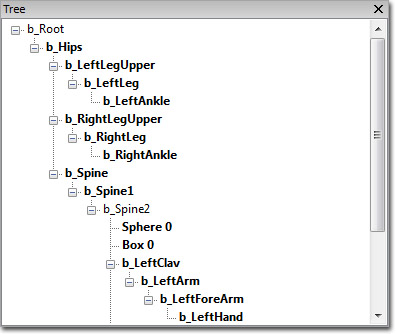 The Tree Pane shows a hierarchical view of the bodies or constraints of the physics asset, depending on which mode the editor is currelty in. The tree view shows all bones which have a body or constraint associated with it or whose children have a body or constraint associated with them. Bones with bodies or constraints directly associated with them are shown in bold to distinguish them. Selecting bodies or constraints in the Tree Pane will select them in the Preview Pane allowing them to be transformed with the transformation widget and will make their properties visible in the Properties Pane for editing as well.Controls
Mouse Controls
| LMB | Select limb/joint or widget axis |
|---|---|
| SHIFT + LMB | will do a non-uniform transform if possible (scaling along one axis) |
| CTRL + LMB | Poke the physics asset (only in a live simulation) |
| CTRL + RMB + Drag | Grab onto the physics asset (only in a live simulation) |
| L + DRAG | Orbit directional light |
Keyboard Controls
| W | Move Mode |
|---|---|
| E | Rotate Mode |
| R | Scale Mode |
| X | Lock Selection |
| Spacebar | Cycle Widget Mode |
| B | Switch between Body and Constraint mode |
| A | Turn on Snap |
| C | Copy properties from/to |
| S | Simulation start/stop |
| H | Cycle render mode for asset |
| J | Cycle render mode for bodies |
| K | Cycle render mode for constraints |
| D | Weld bodies together (must be parent-child pair) |
| Q | Cycle constraint X -> Y -> Z |
| DEL | Delete constraint/body |
| HOME | Center view on selected Body or Constraint |
| [ | Enable collision between selected body and another |
| ] | Disable collision with the selected body and another |
Creating a Physics Asset
Modifying a physics asset
Collision primitives / bodies
Body Properties
RB_BodySetup- Sleep Family - Sets the method used to determine when to put the body to sleep.
- Bone Name - Displays the name of the bone with which the body is associated.
- Fixed - If true, the body will have no physics applied to it. it will be fixed relative to the world.
- No Collision - If true, the body will not collide with anything.
- Block Zero Extent - If true, the body will block zero extent checks, such as instant hit weapon traces.
- Block Non Zero Extent - If true, the body will block non-zero extent checks, such as player collisions.
- Enable Continuous Collision Detection - If true, the continuous collision detection system is used. This can be useful to keep bodies moving at high speeds from passing through geometry, but comes at the expense of slower calculations.
- Always Full Anim Weight - If true, the body will always have physics applied to it regardless of the Physics Weight value. This is useful for bodies that should always be driven by physics such as cloth or pony tails.
- Consider For Bounds - If true, this body will factor into the bounds determination. The fewer bodies that are used in determining the bounds, the faster the calculation will be each frame.
- Phys Material - Sets the Physical Material used by this body. See the Physical Material page for more information.
- Mass Scale - Sets a multiplier for the mass of the body. This value is multiplied by the default mass which is based on the volume of the body.
- Pre Cached Phys Scale - Sets a list of scales at which to pre-cache physics for this body.
- COMNudge - An offset applied on top of the body's PhysX-calculated Center of Mass.
- Agg Geom
- No RBCollision - If true, this shape is completely ignored for physics. It will not only have no collision, but will also not contribute to the mass/inertia tensor of the body. Setting this on all shapes within a body is invalid.
- Per Poly Shape - If true, this shape will be considered by Unreal line traces even if this bone is defined as using per-poly collision with the PerPolyCollisionBones option.
Body Instance Properties
Bone Spring- Enable Bone Spring Linear - If true, a linear 'spring' between the physics body for this bone and the world-space location of the animation bone is enabled.
- Enable Bone Spring Angular - If true, a angular 'spring' between the physics body for this bone and the world-space location of the animation bone is enabled.
- Disable On Overextension - If true, the bone spring will automatically disable if it ever gets longer than the Overextension Threshold.
- Notify Owner On Overextension - If true, a notification is sent to the Owning Actor when overextended is sent by calling Actor::OnRigidBody.
- Teleport On Overextension - If true, this will teleport the whole Physics Asset Instance if this spring gets too long to reduce the error to zero. Note: Having this enabled on more than one body in a single physics asset will have unpredictable results.
- Use Kin Actor For Bone Spring - If true, when using bone springs, connect them to a kinematic body and animate that rather than animating the attachment location on the 'world'. This adds some overhead, but tracks rapidly moving targets better.
- Make Spring To Base Collision Component - If true, when using bone springs, connect them to the physics body of the Base's Collision Component. When using this option, SetBoneSpringTarget must be given a matrix for this bone relative to the other bone, rather than relative to the world.
- Bone Linear Spring - Sets the strength of the linear spring to the animated bone.
- Bone Linear Damping - Sets the damping of the linear spring to the animated bone.
- Bone Angular Spring - Sets the strength of the angular spring to the animated bone.
- Bone Angular Damping - Sets the damping of the linear spring to the animated bone.
- Overextension Threshold - If Disable On Overextension is true, the bone spring will be disabled if it stretches more than this amount.
- Only Collide With Pawns - If true, this body should only collide with other bodies with their components marked by bConsiderPawnForRBCollision. This is useful for flappy bits which should not collide with the world.
- Enable Collision Response - If true, this enables a physics response for this body. If false, contacts are still generated and reported. This is useful for sensor bodies.
- Push Body - If true, this body will be denoted as a "push" body. This also disables collision response.
- Phys Material Override - Sets the physical material to use for this body, overriding that of the actor using the physics asset or the material assigned to it.
- Contact Report Force Threshold - Sets the threshold used by the force-based collision reporting system. if the value is negative, the system will be disabled for this body.
- Instance Mass Scale - Per-instance multiplier to scale the mass.
- Instance Damping Scale - Per-instance scaling of linear/angular damping for this body.
- Custom Gravity Factor - A multiplier for the custom gravity applied to the body, allowing bodies to individually control how custom gravity settings affect them.
Constraints
Constraint Properties
RB_ConstraintSetup- Joine Name - The name of the joint. This will be the same as the Constraint Bone 1 in a physics asset.
- Constraint Bone 1 - The name of the first bone that the joint should connect.
- Constraint Bone 2 - The name of the second bone that the joint should connect.
- Enable Projection - If true, when distance error between bodies exceeds 0.1 units or rotation error exceeds 10 degrees, the body will be projected to fix this.
- Linear Limit Soft - By default the linear limits are `hard'. If you set this to true they are treated as springy instead and you can `push' into them.
- Linear Breakable - If true, this joint can be broken by applying a linear force to it (basically pulling the joint apart).
- Linear X/Y/ZSetup
- bLimited - If true, there is a limit on this degree of freedom. If false, linear movement is not limited at all.
- Limit Size - If bLimited is true, how much movement is allowed in this direction. Set this to zero to completely 'lock' this degree of freedom.
- Linear Limit Stiffness - If Linear Limit Soft is true, this controls the stiffness of the limit spring.
- Linear Limit Damping - If Linear Limit Soft is true, this controls the damping of the limit spring.
- Linear Break Threshold - If Linear Breakable is true, this is the force that is needed to break the joint.
- Swing Limited - If true, the angle between the two bodies is limited to a cone.
- Twist Limited - If true, the twist between the two bodies is limited.
- Swing Limit Soft - By default the swing cone limit is `hard'. If this is set to true it is springy instead and can be pushed into.
- Twist Limit Soft - By default the twist limit is `hard'. If this is set to true it is springy instead and can be pushed into.
- Angular Breakable - If true, this joint can be broken by applying a torque to it (basically twisting the joint apart).
- Swing 1LImit Angle - Defines one dimension of the swing limit cone in degrees.
- Swing 2Limit Angle - Defines the other dimension of the swing limit cone in degrees.
- Twist Limit Angle - Defines the amount of twist that is allowed between the two constrained bodies.
- Swing Limit Stiffness - If Swing Limit Soft is true, this controls the stiffness of the cone.
- Swing Limit Damping - If Swing Limit Soft is true, this controls the damping of the cone.
- Twist Limit Stiffness - If Twist Limit Soft is true, this controls the stiffness of the twist limit.
- Twist Limit Damping - If Twist Limit Soft is true, this controls the damping of the twist limit
- Angular Break Threshold - If Angular Breakable is true, this is the torque required to break this joint.
- Is Pulley - If true, this joint will be treated as a pulley type
- Maintain Min Distance - If true, no `slack' is allowed in the `ropes' and they are treated a bit like rods instead, so you can push up on one object and the other will be pushed down.
- Pulley Ratio - The gear ratio on the pulley. If its not 1.0, pulling on one side will result in less movement on the other, but with more force.
Constraint Instance Properties
Linear- Linear XPosition Drive - Enable position drive on the linear X axis.
- Linear XVelocity Drive - Enable velocity drive on the linear X axis.
- Linear YPosition Drive - Enable position drive on the linear Y axis.
- Linear YVelocity Drive - Enable velocity drive on the linear Y axis.
- Linear ZPosition Drive - Enable position drive on the linear Z axis.
- Linear ZVelocity Drive - Enable velocity drive on the linear Z axis.
- Linear Position Target - If linear position drive is enabled, this is the target relative position that the joint will try to achieve.
- Linear Velocity Target - If linear velocity drive is enabled, this is the target relative linear velocity that the joint will try to achieve.
- Linear Drive Spring - If linear position drive is enabled, this is the stiffness of the drive spring.
- Linear Drive Damping - If linear position drive is enabled, this is the damping of the drive spring.
- Linear Drive Force Limit - If linear velocity drive is enabled, this is the maximum force that will be applied to attain LinearVelocityTarget.
- Swing Position Drive - Enable position drive on the swing axes.
- Swing Velocity Drive - Enable velocity drive on the swing axes.
- Twist Position Drive - Enable position drive around the twist axis.
- Twist Velocity Drive - Enable velocity drive around the twist axis.
- Angular Slerp Drive - Advanced option. Specifies the method that is used for applying drive to the joint.
- Angular Position Target - If angular position drive is enabled, this is the target relative quaternion that the joint will try to achieve.
- Angular Velocity Target - If angular velocity drive is enabled, this is the target relative angular velocity that the joint will try to achieve.
- Angular Drive Spring - If angular position drive is enabled, this is the stiffness of the drive spring.
- Angular Drive Damping - If angular position drive is enabled, this is the damping of the drive spring.
- Angular Drive Force Limit - If angular velocity drive is enabled, this is the maximum torque that will be applied to attain AngularVelocityTarget.